- Home
- About
Hello, I am Cath
There is not much of a company behind this. It is me, a hook, a lot of yarn, and a cat who has been extremely good about all of it.
I am 28 and I have been crocheting for eight years. I started with amigurumi, the little stuffed animals, and I made a lot of them before I worked out that what I actually loved making was hats. Small ones. For cats.
I opened the Etsy shop in 2022 mostly to see whether anybody else wanted them. It turned out they did. Since then I have sent out 575 orders, which still surprises me when I write it down, and the reviews have stayed at five stars, which surprises me more.
These days the shop is a mix of the things I got known for and the things I make because I want one myself. That is where the Tamagotchi cases came from, and the Junimo coasters, and the Switch case shaped like a bell bag. If you have ever finished a farming game at two in the morning, we will get on.
Everything is made here in Newcastle, by me, after you order it. Nothing is sitting in a box waiting. That is slower than a shop that keeps stock, but it means I can change the colour, adjust the size or start again when something is not right, and I would not want to run it any other way.
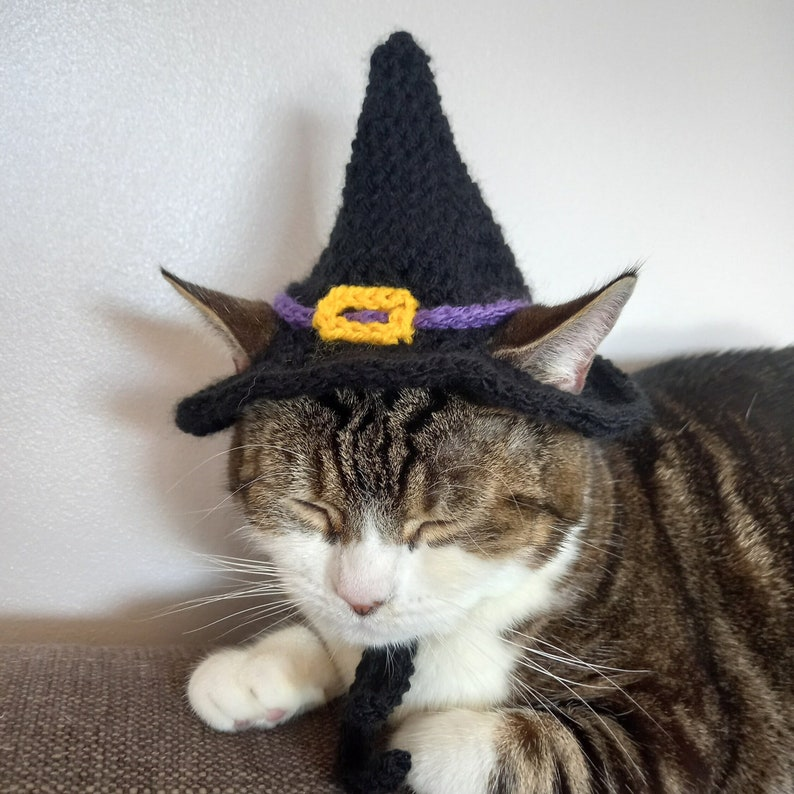
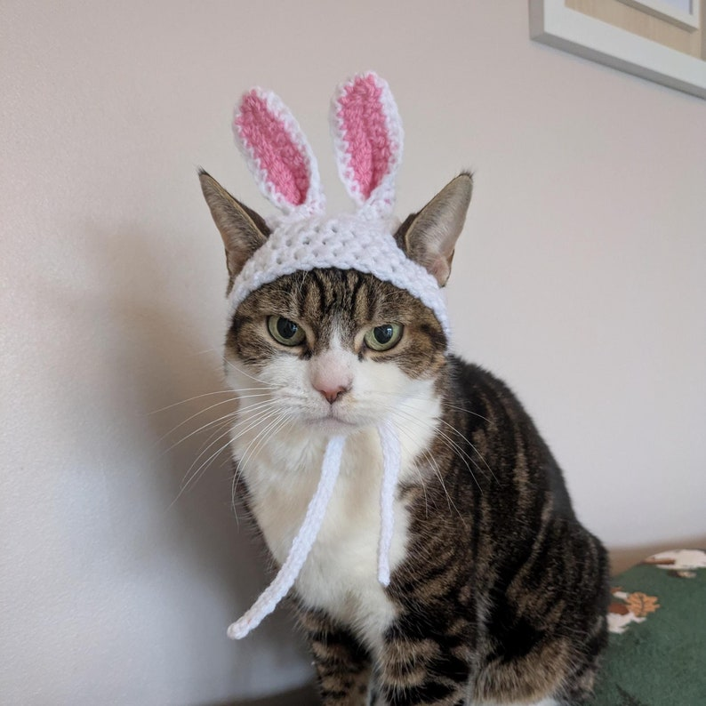
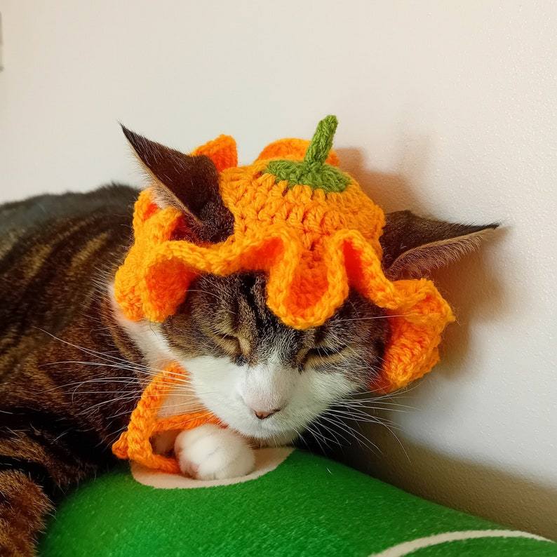
The model
This is Lola
She is thirteen. I have had her since I was a teenager, which means she has been around for longer than the crocheting has. She is my best friend and she is on more of the shop photographs than I am.
Almost every hat in the shop has been on her head at some point, which is how I know they fit a regular sized cat and how I know the ties need to be long. She gets a treat afterwards. Sometimes she gets the treat and then walks off wearing the hat, which is how you get the good photographs.
If your cat is not as relaxed about it as Lola, that is completely normal. Take it off, try again another day, and have a read of the notes on keeping them comfortable.
The honest bits
How this actually works
Why you check out on Etsy
I am one person. I am not going to run a payment system, a card processor and a returns policy better than Etsy already does, and you get proper buyer protection there. So this site is where I explain things and take custom requests, and Etsy is where the money changes hands.
Where the patterns come from
Some designs are mine. Others are made from patterns I have bought from other crocheters, and when that is the case I credit them on the listing. Knotvivi and PawPawCrochet are two whose patterns you will see named in my shop. Designers deserve their name on their work.
Why it takes up to ten days
Because I make it after you order it, and because there is only one of me. If I am quiet it goes out quicker. If it is October and every cat in the country needs a pumpkin, it takes the full ten days. Either way I would rather give you the honest number.
The seasonal rush is real. Halloween hats start going up around September and Christmas ones in November, and both sell faster than anything else I make. If there is something you want for a particular date, ask early rather than in the last week. The mailing list is the easiest way to hear when a batch goes up.
A few of them
Some things I have made
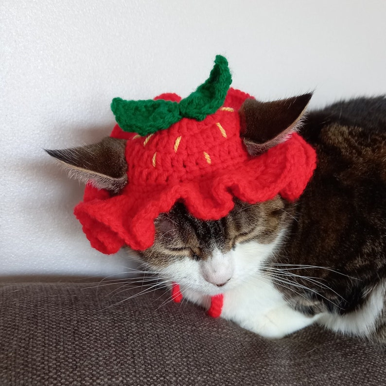
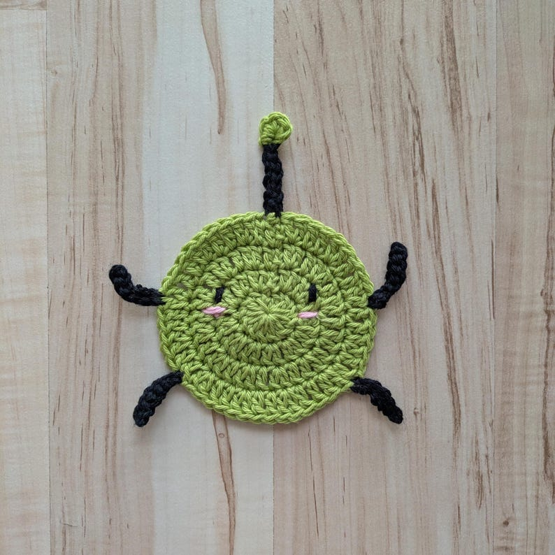
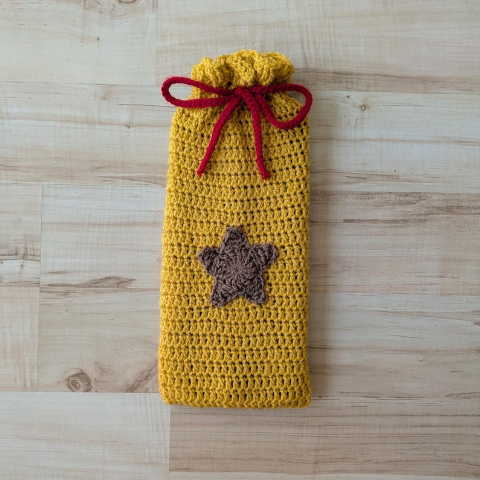
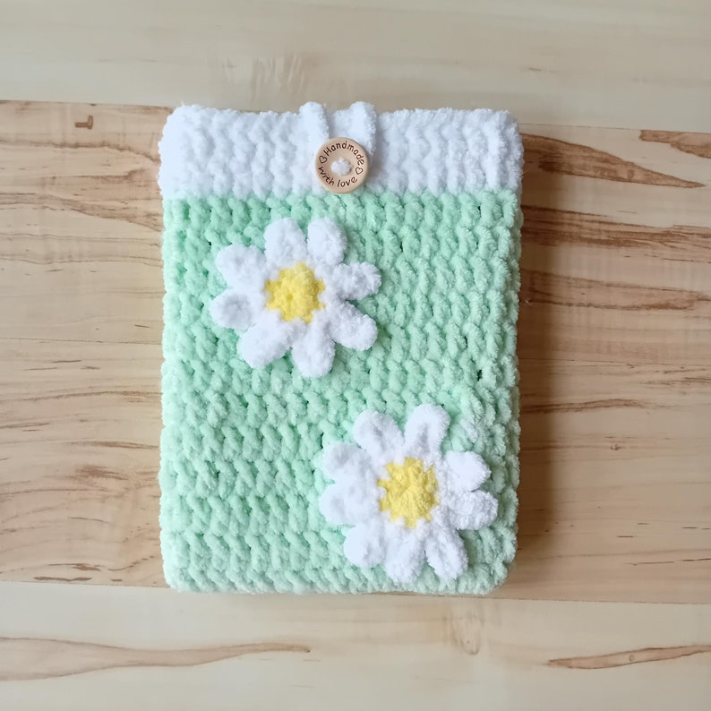
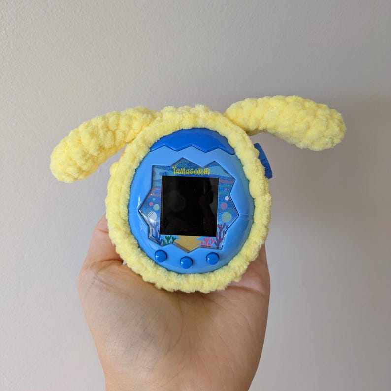
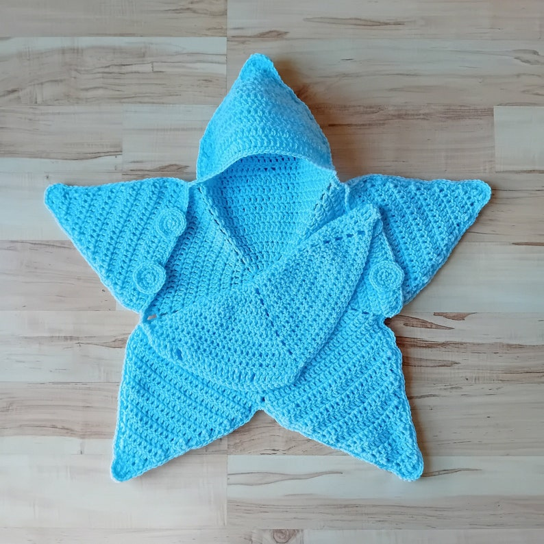
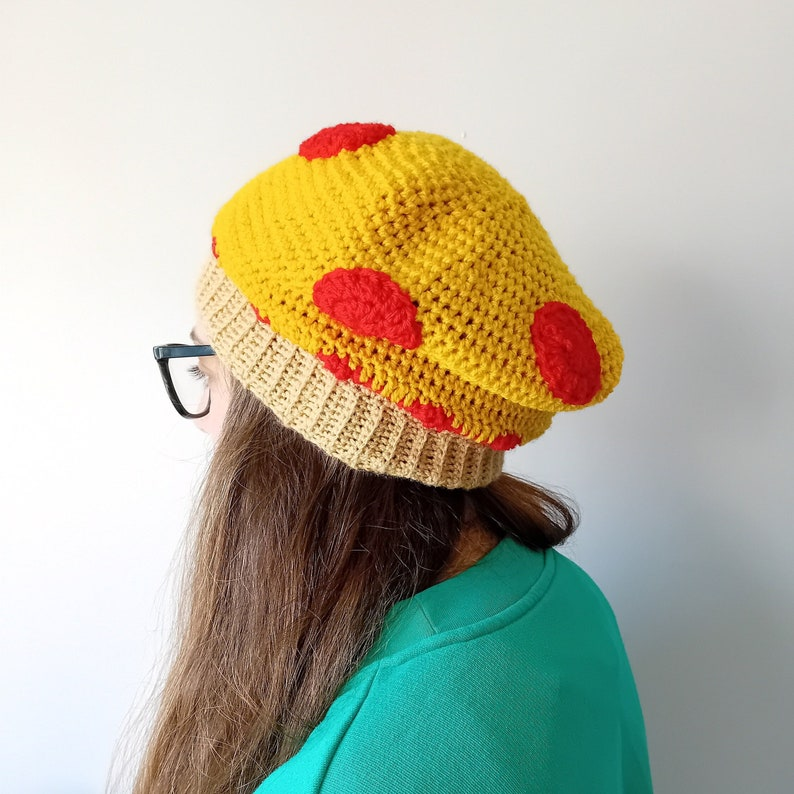
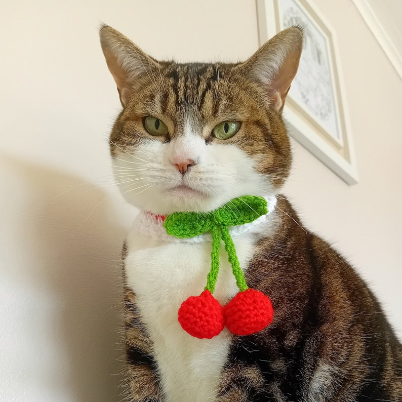
Come and say hello
I post what I am working on as I go, usually half finished and usually with a cat in the shot.